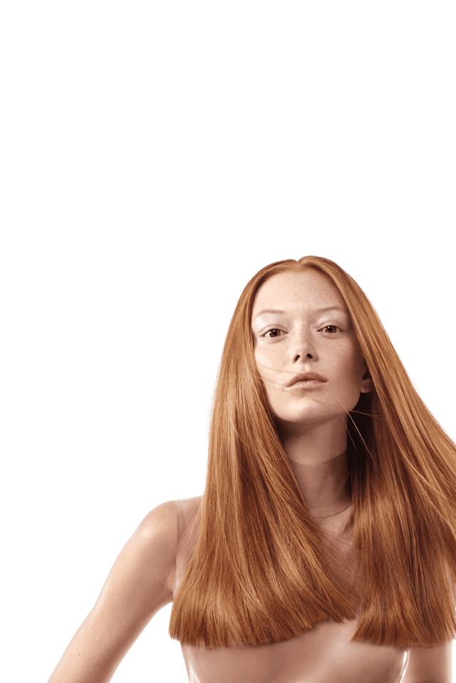

Absolut Repair Molecular
Odbudowa molekularna
Szampon do włosów zniszczonych
Stworzony we współpracy
z profesjonalistami
z profesjonalistami

Naprawa
2 lat uszkodzeń
przy jednym
użyciu1
2 lat uszkodzeń
przy jednym
użyciu1
[1] Test instrumentalny struktury makromolekularnej na powierzchni włókna włosa po zastosowaniu szamponu, serum do spłukiwania i maski bez spłukiwania Absolut Repair Molecular.
Oczyszczenie,
regeneracja i odżywienie
86%
więcej wygładzenia2
Przywrócenie siły,
elastyczności
i sprężystości3
i sprężystości3
[2] Test instrumentalny.
[3] Test konsumencki po 2 tygodniach stosowania szamponu, serum do spłukiwania i maski bez spłukiwania.
[3] Test konsumencki po 2 tygodniach stosowania szamponu, serum do spłukiwania i maski bez spłukiwania.
Prawdziwy przełom w walce o odbudowę
zniszczonej struktury włosów
zniszczonej struktury włosów
Technologia oparta na peptydach i aminokwasach działa na poziomie molekularnym. Nie tylko odbudowuje strukurę włosów, ale też nadaje im siłę i elastyczność, sprawiając, że stają się zdrowo wyglądające i łatwe do układania. Dlatego gama Absolut Repair Molecular jest idealnym wyborem nawet dla bardzo zniszczonych włosów.

Ratunek dla zniszczonych włosów
Kiedy włosy są zniszczone, ich struktura molekularna złożona z peptydów zostaje naruszona. Uszkodzenia są nieodwracalne. Aby włosy odzyskały siłę i zdrowy wygląd, potrzebują specjalnej pielęgnacji.
Przełomowe rozwiązanie dla naprawy wieloletnich uszkodzeń =
aminokwasy + peptydy
Opatentowany program molekularnej odbudowy struktury włosów
Dzięki skoncentrowanej formule z 2% peptydów oraz 5 aminokwasami, Absolut Repair Molecular odbudowuje strukturę molekularną włosów 1 oraz przywraca im siłę i elastyczność 2 .
[1] Test instrumentalny po 15 użyciach szamponu, serum do spłukiwania i maski bez spłukiwania Absolut Repair Molecular.
[2] Test konsumencki po 2 tygodniach stosowania szamponu, serum do spłukiwania i maski bez spłukiwania Absolut Repair Molecular.
[2] Test konsumencki po 2 tygodniach stosowania szamponu, serum do spłukiwania i maski bez spłukiwania Absolut Repair Molecular.
Naprawa 2 lat uszkodzeń przy jednym użyciu 1
Gama Absolut Repair Molecular przeznaczona jest do włosów zniszczonych i osłabionych częstymi zabiegami stylizacji na gorąco, farbowaniem oraz trwałą ondulacją.
PRZED PO PRZED PO
❮
❯
❮
❯
* Bez retuszu. PRZED Zniszczone i osłabione Matowe Pozbawione sprężystości [1] Test instrumentalny struktury makromolekularnej na powierzchni włókna włosa po zastosowaniu szamponu, serum do spłukiwania i maski bez spłukiwania Absolut Repair Molecular.
* Bez retuszu. PRZED Zniszczone i osłabione Matowe Pozbawione sprężystości PO Zregenerowane i odżywione Wygładzone Sprężyste i lśniące Zdrowy wygląd włosów Odbudowa na poziomie molekularnym1 [1] Test instrumentalny struktury makromolekularnej na powierzchni włókna włosa po zastosowaniu szamponu, serum do spłukiwania i maski bez spłukiwania Absolut Repair Molecular.
Nuty zapachowe w szamponie Absolut Repair Molecular
Wyjątkową formułę szamponu uzupełnia zachwycająca kompozycja zapachowa, w której dominuje świeży aromat pomarańczy bergamotki oraz kwiatowe nuty kolonu i lawendy białej.
Sposób użycia:
1.Rozczesz włosy i zmocz je.
2.Spień porcję szamponu i okrężnymi ruchami wcieraj go u nasady włosów.
3.Powstałą pianą umyj włosy na całej ich długości.
4.Dokładnie spłucz szampon.
Odkryj profesjonalną pielęgnację do włosów zniszczonych
01
Nanieś szampon na mokre włosy. Masuj do uzyskania piany, a następnie dokładnie spłucz.
02
Podziel włosy na 2 sekcje. Nabierz 2–3 pompki produktu. Rozprowadź równomiernie na długości i końce włosów. Precyzyjnie wmasuj serum we włosy, pasmo po paśmie. Dokładnie spłucz.
03
Osusz włosy ręcznikiem, nałóż jedną pompkę produktu na każdą sekcję włosów. Rozprowadź i nie spłukuj.
Znajdź szampon dopasowany do swoich potrzeb
Do włosów zniszczonych
Rodzaj włosów
Włosy suche i lekko zniszczone
Odbudowa struktury molekularnej włosów, Naprawa 2 lat uszkodzeń1
Korzyści
Regeneruje i odżywia
Peptydy + 5 aminokwasów
Składniki
Ekstrakty z otrębów, złotej komosy ryżowej, białko pszeniczne
Szampon
Absolut Repair Molecular
[1] Test instrumentalny struktury makromolekularnej na powierzchni włókna włosa po zastosowaniu szamponu, serum do spłukiwania i maski bez spłukiwania Absolut Repair Molecular.